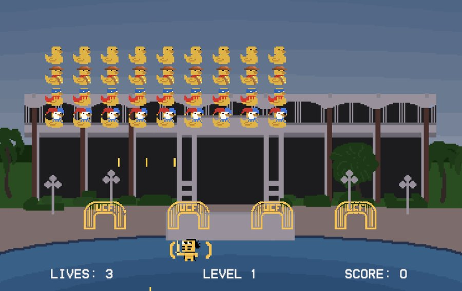
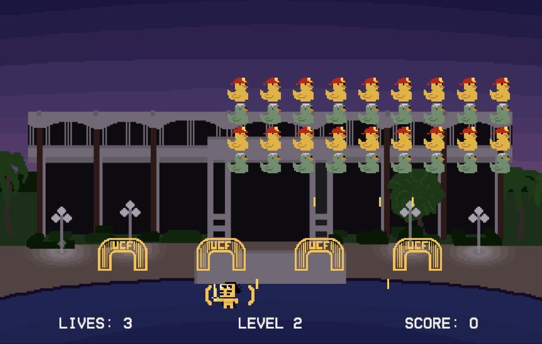

Duck Invaders
[One sentence about the game.]
- Course
- Game Production
- Role
- UX/UI designer
- Status
- Completed
- Play
- itch.io page
- Team
- 5 people
- Tools
- Unity (engine), Piskel (pixel art)
Goal
[What the game or project is and what you set out to do.]
What I did
- Designed the game's UX/UI.
Process
[UI sketches and early drafts]
Screens



What I learned
[Takeaways you would apply next time.]